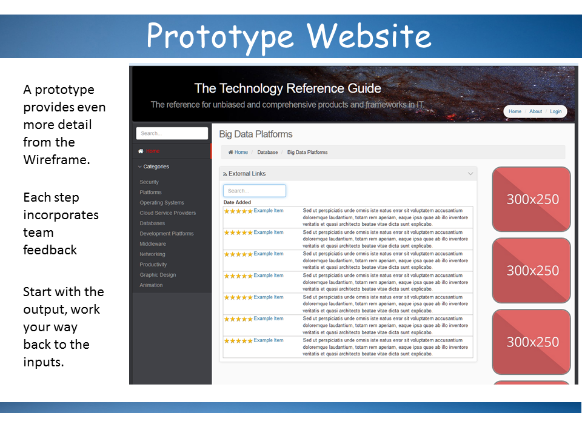
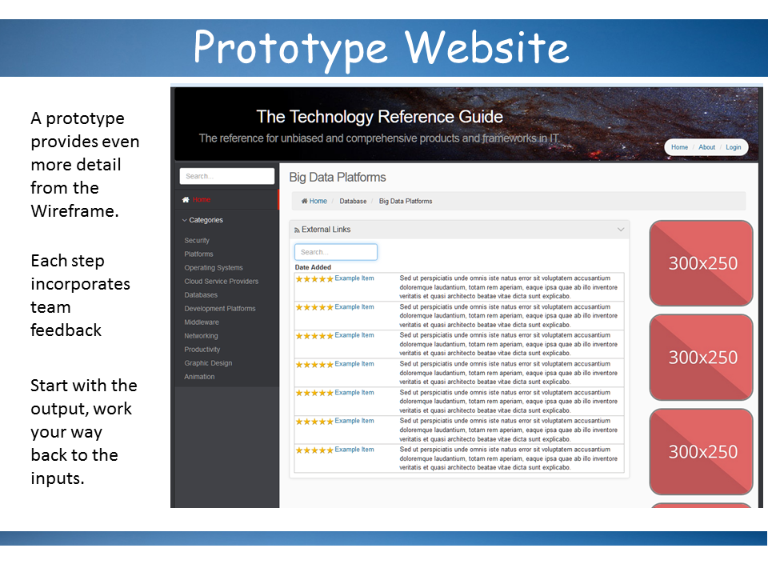

ISMT E-101 : Agile Project Management
Project Content Site : Technology Reference Guide
Charles Cushing
Home
This is the final project web site for ISMT E-101 : Agile Project Management. (Spring 2016)
Submitted By : Charles Cushing
Executive Summary
Overview
In the emerging open sourced world of technology, it is difficult to sort through the relevant and appropriate technologies to employ for specific projects. Software Developers need to know where they should focus their attention to keep their skills up to date. Technology managers need to know which platforms are best suited to their needs and which ones are becoming obsolete. Many people in the information technology field need a comprehensive and unbiased source which monitors current trends in platforms and frameworks across different industries in order to make better informed decisions regarding the infrastructure and architecture of their own organizations.
The Technology Reference Guide is a web site intended for IT industry professionals which collects data from industry publications, social media, and subject matter experts where users can quickly keep up to date on the emerging trends in IT by industry and technology space. We differentiate ourselves from other sites by employing data analytics technology which allows our content managers and subject matter experts to provide constant up to date data taken from the industry as a whole.
We are using the Agile project management methodology to implement this solution. With Agile, our work is divided into milestone projects called sprints. Sprints typically last 2 weeks and a set of tasks taken from our project backlog are slated to be completed in the current sprint. This approach allows us to be flexible in the face of changing requirements and keeps our team focused on providing incremental value. At the end of each sprint, we conduct a retrospective on how we can improve on how we deliver and begin planning on what we will deliver for our next sprint.
Current Status
Below is the current status of our project. We have broken down the project into 4 major phases : Design, Develop, Content and Marketing. The red line indicates where we are today and each task has a %Complete bar associated with it. Green bars indicate the project milestone is on track or completed. Yellow indicates that this milestone may be in danger of being behind. Red indicates that the milestone is behind our anticipated delivery date and needs to be watched more closely.
So far, we are on target with the design phase of our project. We have created the website wireframe mockups, and are on target with the database and site architecture documents. Some issues concerning the design of the data analytics engine have caused delays in completion of the middleware design document, however, we anticipate that these issues will be resolved and have put a higher priority on working on these issues in our next sprint.
We are ahead of schedule for creating our development and production server environments. The choice to set up our infrastructure in the cloud has made setting up these servers much easier. We were not sure at first what obstacles we would run into in doing this, but it seems we had almost no problems getting everything set up correctly.
The Content phase of our project has been delayed due to limited resource availability. As a result, we are planning to get more firm commitments on time and we will push the start dates for our content phase further out. We do not anticipate this will impact our go live date for Q2 2017.
Next Steps
We are currently in sprint #2 of our project. Details and updated progress can be viewed on our Trello board (link). As we approach the end of Q2 2016, we anticipate for Q3 2016 that we will have most of the site design completed with the exception of the data analytics engine which may stretch into Q4 2016. We will enter the Develop phase of the project in Q3 2016 and anticipate that our prototype site will be complete and ready to go live in Q4 2016. The Content Manager and Marketing Director will also start work on their respective milestone in Q3 2016.
Project Artifacts
The following links will direct you to the most recent artifacts for the Technology Reference Guide Project.
Biography
Link to original documentI am from Portland, Maine which is about 2 hours north of Boston. In college I studied finance and economics with a minor in computer science. I started my career as an analyst with Wells Fargo in San Francisco and began studying Systems Analysis and Design at UC Berkeley. After a couple of years, I was working in Silicon Valley during the .com boom of the mid 1990’s. This was a very exciting and interesting place to be at the time. At this time I focused my career on business intelligence and data warehouse design. I eventually found my way back to the Boston area, got married and have been living just north of Boston for the past 14 years. In that time I have spent over 10 years as an independent contractor doing software development and the last 5 years working for the Federal Reserve System where I manage a team of developers. During my career I have worn many hats. I have been a scrum master, a project manager, a product owner, a subject matter expert, and a software developer.
Successes, Challenges, Lessons Learned.
Working as a contractor provided me with the unique opportunity to work on many different projects across many different organizations and industries. I could see what worked and what did not. I could also see the common challenges different companies face with software development. I like to think that I was doing agile development before the term was really applied in the software world. The most common challenge I saw in developing software was not achieving the technical capacity to deliver on a solution, but the constantly changing requirements during the development cycle. As a developer, you are put in the awkward position of having to tell the people paying your salary that they have to stop otherwise they are going to sink the project. Having a backlog would allow me to never have to say no, but at the same time, it would force project sponsors to prioritize requirements in the face of time and budget constraints. Keeping them constantly engaged and part of a feedback cycle would guard against any surprises when the solution would be delivered. This is in contrast to the more traditional waterfall methodology where requirements would be documented in detail and a few months later the solution would be presented to stakeholders with the hope that they would be happy with the end result. Over many years and many projects I have seen the needle vacillate between a more structured approach like waterfall and a less structured approach like agile. I think both methodologies have their strengths and weaknesses and some projects are better suited to agile while some are better suited to waterfall. Agile lends itself to small project teams where the desired outcome is not well defined or there are a lot of stakeholders involved. Waterfall seems to be better for teams with a lot of people and interdependencies where the solution is well defined and agreed upon up front.
What I hope to learn
I am looking forward to learning from other people’s experiences. I would like to learn more about agile from the product owner’s perspective and become more familiar with the agile ceremonies and artifacts. I tend to hear “that is not really agile” a lot from different colleagues, so, I would like to be more in depth with my knowledge of agile and hopefully be able to call myself an expert or at least a qualified practitioner. We are also applying a lot of agile principles with my current team and I hope to be able to apply what I learn here to the projects I am working on.
Project Concept
Link to original documentTechnology Reference Guide
This is an idea for a web site and annual publication which keeps track of the latest trends in technology throughout different industries. The purpose would be to identify and categorize technologies, such as programming languages and frameworks based on their popularity and function. The site would be a real-time encyclopedia of technology and related products. Data collected from social media and industry publications would be used to rank and categorize each respective technology in terms of popularity and function.
I came up with this idea because I have found it difficult to find an unbiased and comprehensive place where I can search and keep up to date on emerging technologies. With the move toward everything being open sourced, it is a challenge to sort through and keep on top of all the different tools, frameworks and systems available in the tech world. This web site would make it easy to browse and make sense of the dizzying array of tools which are available.
I think this would be a good project for Agile because the end solution could look end up looking many different ways and there can be many paths to achieving the end result. I also think the project is just about right in terms of team size.
Stakeholders
- Technology Professionals who are trying to determine which skills they should work on in order to stay up to date.
- Technology Managers who are trying to decide on the most appropriate technologies to use for new projects.
- Enterprise Architects who are trying to determine the most appropriate technologies to use for designing and integrating their organization’s systems.
Project Skinny ACME Bike
Link to original documentWelcome to Awesome Group 5
YOUR NAMES:
- 1.Charles Cushing
- 2.Matthew Sumner
- 3.Mary Nicodemus
- 4.Terry Yong
- 5.Nallasamy Ponnusamy
PROJECT NAME:
Project Skinny for ACME Bike
THE NEED
Acme bike needs to increase revenue across all lines of their business. The population of Bellow Falls is 3,100 people and steadily declining since 1920s. Taking the whole Windham County into account, we can see that the pool of potential customers is only 43,500. Bicycle industry is highly seasonal business; it relies on discretionary spending and economic conditions. The growth of online shopping leads to closure of several local business in Windham County, the online shopping experience is also becoming more and more sophisticated; therefore reducing foot traffic to traditional brick and mortar store. This presents significant challenge for the ACME bicycles, and in order to compete, ACME has to launch a state-of-the-art website allowing customers from anywhere in the world to buy their customized bikes and accessories online Essential to achieving this goal will be to expand from their local market in Vermont to a national or global market for selling customized bikes. A web site which allows users to view, customize to their needs and order products from Acme will be the first step towards moving out of an exclusively local market and into a global market.
THE ONE SENTENCE SUMMARY
Awesome Group 5 will design, develop, test and implement a state-of-the-art website for Acme Bike.
DEFINITION OF DONE
This project will be considered done when the following functional components have been verified to be working on the new web site.
- Customer should be able perform the following activities
- Browse product catalogue
- Customize bikes
- Add to Cart
- Select and add bike accessories to the cart
- Checkout and pay using credit cards, paypal and E-check
- Receive order confirmation through email
- A calendar of bike tours is made available and users can sign up for joining the tours.
- Provide the ability for users to join the email list and newsletter.
- Set up an online shop for ordering bikes and related accessories.
Project Skinny
Link to original documentPROJECT NAME:
Technology Reference GuideTHE NEED
In the emerging open sourced world of technology, it is difficult to sort through the relevant and appropriate technologies to employ for specific projects. Software Developers need to know where they should focus their attention to keep their skills up to date. Technology managers need to know which platforms are best suited to their needs and which ones are becoming obsolete. Many people in the information technology field need a comprehensive and unbiased source which monitors current trends in platforms and frameworks across different industries in order to make better informed decisions regarding the infrastructure and architecture of their own organizations.
ONE SENTENCE SUMMARY
We will implement a web site intended for IT industry professionals which collects data from industry publications, social media, and subject matter experts where users can quickly keep up to date on the emerging trends in IT by industry and technology space.
DEFINITION OF DONE
The project will be considered done when the following 4 functional components have been implemented and verified to be working as intended by the product owner.
- Create a web site which allows subject matter experts to create content related to technologies where they are designated to be experts.
- Create a data warehouse which routinely collects data from industry RSS feeds and social media posts in order to rank and identify technology trends in IT.
- Create a public web site which presents technology trend data in an easy to understand and categorized hierarchy.
- Create an annual publication which summarizes and highlights the most notable trends for the past year.
Charter for ACME Bike
Link to original documentYour Names:
- Charles Cushing
- Matthew Sumner
- Mary Nicodemus
- Terry Yong
- Nallasamy Ponnusamy
PROJECT NAME: Acme Bike Web Site
THE NEED
Acme bike needs to increase revenue across all lines of their business. The population of Bellow Falls is 3,100 people and steadily declining since 1920s. Taking the whole Windham County into account, we can see that the pool of potential customers is only 43,500. Bicycle industry is highly seasonal business; it relies on discretionary spending and economic conditions. The growth of online shopping leads to closure of several local business in Windham County, the online shopping experience is also becoming more and more sophisticated; therefore reducing foot traffic to traditional brick and mortar store. This presents significant challenge for the ACME bicycles, and in order to compete, ACME has to launch a state-of-the-art website allowing customers from anywhere in the world to buy their customized bikes and accessories online Essential to achieving this goal will be to expand from their local market in Vermont to a national or global market for selling customized bikes. A web site which allows users to view, customize to their needs and order products from Acme will be the first step towards moving out of an exclusively local market and into a global market.[a]
The One Sentence Summary
Awesome Group 5 will design, develop, test and implement a state-of-the-art website for Acme Bike
Definition of Done
This project will be considered done when the following functional components have been verified to be working on the new web site.
- Customer should be able perform the following activities
- Browse product catalogue
- Create a customized bike
- Order bikes, parts, and accessories via a standard shopping cart feature.
- A calendar of bike tours is made available and users can sign up for joining the tours.
- Provide the ability for users to join the email list and newsletter.
- Set up an online shop for ordering bikes and related accessories.
WOW! FACTOR
This project is exciting and valuable because it will be the digital version of Acme Bike’s brick and mortar store. It will demonstrate their dedication to provide their customers will the best in products and services, and will allow them to extend their brand throughout the New England region and to the rest of the world!
The web site will transform the custom bike buying experience into a more enjoyable, convenient and cost effective one. This project will result in a state of the art website which will have an ability to build your bikes, view it instantaneously and make changes if you wish. It will also offer customers with recommended accessories, safety tips, bike routes etc.
Project Priorities
_5_ Scope _7_ Team Satisfaction
_4_ Schedule _2_ Customer Satisfaction
_6_ Cost _3_ ROI
_1_ Quality
PROJECT BOUNDARIES:
The following items will be considered out of scope for this project.
- Ongoing site maintenance and support
- Service and guarantee repairs coordination for the world (only local support)
- Disaster recovery, backup, hardware and networking requirement for the project
- Marketing of newly built website
- Any external shopping service listing such as Ebay Stores, Amazon Storefront or Google Shopping
- Cannot accept Bitcoins
- Social Media Integration.
PROJECT IMPERATIVES
The following metrics must be met in order to call the project a success. Data for these metrics are taken from the web site log data and order data.
- 1. At least 3,000 page views per week within 3 months of the launch and at least 10% growth per month after 3 months.
- 2. At least 500 unique visitors to the site each week within 3 months of the launch and at least 5% growth thereafter.
- 3. At least 50 orders per week within the first 6 months of the launch and at least 15% growth thereafter.
- Tour booking increase 35% within 6 months of the launch.
- Site is launched with zero errors in coding.
THE VISION
Acme Bike’s website is an eye-catching and functional online presence and representation of the company’s brand identity as the premier custom bike builder in the New England States while also being an easy-to-use online bike shop for people needing all types of bikes and accessories. [b]
CORE TEAM
|
Name |
Job Title |
Responsibility |
|
Dave S. |
Bike sales and Tour Guide |
Scrum Master |
|
Mary W. |
Office Manager |
Product Owner |
|
John R. |
Bike Builder |
QA - Tester |
|
Sara W. |
Sales and Order processor |
User tester |
|
Mary N. |
Consultant |
Developer |
|
Tony S |
Bike Mechanic |
Tester |
CRUCIAL STAKEHOLDERS
|
Name |
Job Title |
How will the project impact that stakeholder? |
|
Frank W. |
Owner |
Reputation & Revenue |
|
Jesse W. |
Owner |
Reputation & Revenue |
|
|
|
|
STAKEHOLDERS
(List all stakeholders who are affected by this project. Be sure to include regulators, other departments, and potential opponents. Do not repeat any stakeholders who are already included as “Core Team” or “Crucial Stakeholders.” Add more rows as needed.)
|
Name |
Job Title |
How will the project impact that stakeholder? |
|
|
All Customers |
Better shopping experience |
|
Raleigh Bikes |
Suppliers |
Increase in revenue |
|
Amazon, Walmart |
Competitors |
Impact in sales |
|
Masterpass |
Payment Gateway |
Additional revenue |
|
UPS, FedEx & USPS |
Shipping Companies |
Additional revenue |
|
CUSTOMERS[c] |
|
|
FEATURES[d]
|
Must include |
Nice to have |
|
Web site is compatible with most common browsers: IE, Firefox, Google Chrome, Safari |
Special section of the website that will allow for customers that bought custom made ACME bikes to have individual support by the team |
|
Web site is responsively designed to display across different devices (ie. iPhone or iPad) |
Donation popup for underprivileged communities (ACME can match donations and deliver bikes to communities). |
|
A calendar of bike tours is made available and users can sign up for joining the tours. |
Ability to view in 3D after customization and print |
|
Build your own bike - custom bike configurator |
Ability to track the shipment |
|
Recommendation of accessories with the certain product |
Health related information through bicyclism. Both professional and amateur approach |
|
Shopping Cart is fully functional with 100% secure payment acceptance and zero glitches in sending order information to Acme Bike for processing. |
|
|
Opt-in for customers to receive news and information is functioning and mapped to send an e-mail to whomever will be maintaining the future digital database. |
|
|
Intelligent Search functionality with Faceted Search and Suggestive Search |
|
OPERATING ENVIRONMENT
[e][f][g][h]
The web site will be hosted using Amazon Web Services with a virtual server using the latest LAMP (Linux, Apache, MySQL, PHP) stack. The architecture of the site will utilize responsively designed web frameworks such as Twitter Bootstrap and will use RESTful web services for data transfer between web server and client browser. The website will be accessed through web browsers such as Internet explorer (version 9 and later), Chrome Web browser (Version 40.0.2 and later), Firefox (Version 8 and later), Safari ( All versions) , Opera (version 34 and later) or any other web browser which is compatible with HTML5.The website can be accessed through mobile devices such as Iphone, Ipad, Samsung galaxy, Kindle etc. using mobile browsers or any desktop devices such as PC, Mac with full blown web browsers and smart TVs which have built in web browser. The website can be accessed using low internet speed starting from 3G mobile to high speed connectivity like broadband fiber optic network.
APPROVAL signature
_________________________________
Sponsor Date
[a]Please do not use the Need to discuss the ways in which the project will be a solution. Stay focused on documenting the problems that need to be solved. The first half of this paragraph is good, the second half should be deleted or perhaps moved to the WOW.
[b]Nice!
[c]Customers have to show up on the Stakeholder list.
[d]In the Features, don't duplicate what's already listed in your Definition of Done. In general, if you ever find yourself writing the same thing twice in this lightweight Charter doc, it's time to think again.
[e]Lisa,
Can you clarify the 'Operating environment'? is this about how the solution will be used by the user ? for example 'web browser' in case of website
[f]I answered this in the Helping Each Other forum. Note for future reference that there isn't a guarantee that I'll see these "in doc" comments before the assignment is due.
[g]What you have here is good, but add on any thoughts you have about the devices and connectivity you expect your web site users to have.
[h]Lisa,
Thanks,In future, We will reach out to you through discussions. We have added details regarding the devices and connectivity.
Project Charter
Link to original documentISMT E-101
Charles Cushing
PROJECT NAME: Technology Reference Guide
THE NEED
In the emerging open sourced world of technology, it is difficult to sort through the relevant and appropriate technologies to employ for specific projects. Software Developers need to know where they should focus their attention to keep their skills up to date. Technology managers need to know which platforms are best suited to their needs and which ones are becoming obsolete. Many people in the information technology field need a comprehensive and unbiased source which monitors current trends in platforms and frameworks across different industries in order to make better informed decisions regarding the infrastructure and architecture of their own organizations.
The One Sentence Summary
We will implement a web site intended for IT industry professionals which collects data from industry publications, social media, and subject matter experts where users can quickly keep up to date on the emerging trends in IT by industry and technology space.
Definition of Done
The project will be considered done when the following 4 functional components have been implemented and verified to be working as intended by the product owner.
· Create a web site which allows subject matter experts to create content related to technologies where they are designated to be experts.
· Create a data warehouse which routinely collects data from industry RSS feeds and social media posts in order to rank and identify technology trends in IT.
· Create a public web site which presents technology trend data in an easy to understand and categorized hierarchy.
The Why
It is difficult for IT professionals to keep on top of all the IT related platforms, frameworks and products that available at any given time. It is hard to identify actual trends within the industry that are not tainted by biased coverage. Consumer reports magazine was able to bring clarity to the automobile and consumer durable goods industry for consumers. This web site will strive to be the Consumer Reports equivalent for products and technologies related to the IT industry.
WOW! FACTOR
Information Technology professionals will finally have a single source where they can keep up to date with the latest and greatest technologies. The rapid pace of change in the IT world makes it very difficult to sort through what’s new, what’s old, and what is the most relevant. This site will categorize and rank the most relevant technologies today in an easy to understand and intuitive format. Predictive analytics algorithms will be used on the back end to help identify real trends in technology that do not rely on potentially biased input from subject matter experts.
Project Priorities
1. Customer Satisfaction – The success of the project will largely depend on how useful people find it.
2. Quality – Quality is always important, but the quality of the information on the site is particularly important because it will be a major factor in determining how useful people find it to be.
3. Scope – Actual resources for this project are very limited, so, keeping the scope of what we are trying to achieve will be important.
4. Cost – Most of the cost for the initial phase of this project will come from development and design hours from the team, which for now, is free.
5. Team Satisfaction – Most projects would not rank this as being high, however, since the team is not being paid, it is important that they find compensation in other ways, such as being satisfied with the work they are doing and taking ownership of the final deliverable.
6. Schedule – The project schedule is flexible, but the project scope is not.
7. ROI – Revenue generation will not be a priority for this project. Although it will become an important metric further down the road, right now, we want to focus on delivering a working site that people find useful. If we can achieve that, then we can start thinking about profit.
PROJECT BOUNDARIES:
The following items will be considered out of scope for this project.
No advertising on the site – We do intend to raise revenue on the site through advertising, however, we must first get enough traffic to the site before we can open a revenue stream through advertising. This will eventually be implemented by carefully balancing the goals of remaining unbiased and keeping the site useable and friendly.
Content for the site will be limited to the following categories
· Programming Languages
· Platforms and Operating Systems
· Cloud Service Providers
· Database Software
· Development Platforms
· Open Source Frameworks & Libraries
· Enterprise Security and Encryption
· Personal Productivity Software
User Feedback mechanism for the site: We will eventually want to open a way for our users to take part in our ranking process, however, for this project, it is considered out of scope.
Annual Publication – We are hoping to eventually have our major revenue stream through an annual publication which identifies the major trends we see in our data over the past year. For now, this will be considered out of scope as well.
PROJECT IMPERATIVES
The following metrics must be met in order to call the project a success. The metrics are split into two categories; metrics for site usage and metrics for site content. We are not concentrating on revenue measures at this time.
Usage Metrics – This set of metrics measures the degree to which the site it being used. Data comes directly from the usage and log data generated by the web site.
· Average Page Views per month: We have a goal of a baseline of 15,000 page views per month after the site launch with 25% yearly growth thereafter.
· Unique visitors per day: Our goal is for a baseline of 50 unique visitors per day after the site launch with 25% yearly growth.
· Unique Page views per User: Our goal is for an average 10 page views per user per visit after the site launch and maintain that ratio to be between 10 and 15.
Content Metrics – This set of metrics measures the quantity and quality of content provided on the web site. Data is taken from the content database which provides data to the web site.
· Content Turnover Ratio – This is a general measure of how often old content is replaced with new. On average, this ratio should be at about 60 days. That is, a page dedicated to a particular technology will, on average, be updated every 60 days.
· New Content Ratio – This measures the amount of new technology content as a percentage of all the content. This should be at about 5%.
· Old Content Ratio – This measures the amount of old technology content which will be removed from the site as a percentage of all the content. This should also be at about 5%.
· Number of content pages – This is a baseline number for how many technology content pages should be available on the site. I am estimating this number to be a constant at around 1,000 pages.
THE VISION
The technology reference guide website will be the recognized source for unbiased and comprehensive analysis of the most relevant technologies, platforms and frameworks used in the information technology field.
CORE TEAM
|
Name |
Job Title |
Responsibility |
|
John S. |
Front end developer |
Develops, deploys and maintains the design of the web site. |
|
Charles Cushing |
Principal Developer |
Develops, designs and implements the web site, the content management system and the data warehouse as well as the infrastructure and architecture for all parts of the system. |
|
Fred W |
Content Manager |
Monitors and approves content submitted by subject manager experts. Ensures the quality of the content on the site. |
|
Greg L. |
Enterprise Software SME |
Create and maintain content related to their assigned area of expertise. |
|
Amanda B. |
Open Source Framework SME |
Create and maintain content related to their assigned area of expertise. |
|
Mueen D. |
Development Platform SME |
Create and maintain content related to their assigned area of expertise. |
|
Kate W. |
Productivity Software SME |
Create and maintain content related to their assigned area of expertise. |
|
Charles Cushing |
Product Manager |
Directs the overall functionality of all components in the system. Maintains a list of prioritized features for each component. Provides a long term roadmap and plan for the web site. |
|
Steve Y. |
Database Architect |
Designs, develops and maintains the data warehouse and BI system. |
CRUCIAL STAKEHOLDERS
|
Name |
Job Title |
How will the project impact that stakeholder? |
|
Charles Cushing |
Project Sponsor |
This project is sponsored and funded by me. |
STAKEHOLDERS
|
Name |
Job Title |
How will the project impact that stakeholder? |
|
Software Developers |
User |
The major user base for the web site. They will use the site to determine which technologies they should focus on for keeping their skills up to date. |
|
IT Managers |
User |
IT managers will use the site to identify real technology trends and to aid in decisions related to system infrastructure and architecture. |
FEATURES
Must Have
· A functioning web site which can be viewed by many different devices and is cross platform compatible.
· A functioning content management system which allows subject matter experts to add and update content on the site.
· A data warehouse and business intelligence platform which automatically collects and ranks content from RSS feeds and blogs throughout the internet.
Nice to Have
· A donation page which allows users to donate money to the site.
· A discussion board and comments section for users
OPERATING ENVIRONMENT
· The web site will be responsively designed using the Twitter Bootstrap CSS framework. The web site will be designed to use REST web services for providing data to the web site. This will allow the web site to eventually service other platforms as needed.
· The web site will be hosted using Amazon Web Services with a virtual server using the latest LAMP (Linux, Apache, MySQL, PHP) stack.
· The content management system will also be hosted on Amazon Web Services and will use Joomla for managing content submitted by the subject matter experts.
· The Data Warehouse and Business Intelligence System will be created using SQL Server and hosted on Windows Server 2008 R2.
APPROVAL signature
_________________________________
Sponsor Date
Work Breakdown Structure

Project Uncertainty Profile
Link to original documentLow Uncertainty High Uncertainty
|
0 |
1 |
2 |
3 |
4 |
--- BUSINESS UNCERTAINTY ---
|
Factor (1) |
Rating |
||
|
Clear, measurable |
Ultimate business benefit |
Unclear, not measurable |
2 |
|
Local |
Customer distribution |
Global |
3 |
|
Established |
Customer needs |
Little known |
2 |
|
Veteran |
Experience with target customer group |
New comer |
2 |
|
Stabilized |
Government regulations |
In flux |
0 |
|
Predictable |
Financial exposure |
Unpredictable |
0 |
|
Flexible |
Schedule |
Fixed |
1 |
|
Stable |
Market conditions |
Volatile |
2 |
|
Total |
1.5 |
||
|
Mean (/8) |
--- PRODUCT (DELIVERABLE) UNCERTAINTY ---
|
Factor |
|||
|
Clear |
Functional Requirements |
Unclear |
1 |
|
Clear |
Quality /performance reqs. |
Unclear |
0 |
|
Stable |
Core technology |
Rapidly changing |
0 |
|
In place |
Support systems & processes |
Non-existent |
1 |
|
Clear |
Completion criteria |
Unclear |
1 |
|
Low |
Technical complexity |
High |
2 |
|
Proven |
Track record with similar product |
Unproven |
2 |
|
Total |
1 |
||
|
Mean (/7) |
(1) Factors need to be modified on a project-by-project basis.
--- PROJECT UNCERTAINTY ---
|
0 |
1 |
2 |
3 |
4 |
|
Factor |
|||
|
Reliable |
Outside vendors |
Unreliable |
0 |
|
Low |
Complexity of the project |
High |
2 |
|
Highly experienced |
Team member expertise |
Inexperienced |
1 |
|
Dedicated to this project |
Team member availability |
Multiple projects |
3 |
|
Conducive |
Team’s Working Conditions |
Distracting |
2 |
|
Co-located |
Location of Team |
Dispersed |
3 |
|
High |
Project manager’s control over resources |
Low |
0 |
|
Expert |
Project manager’s experience |
Novice |
0 |
|
Dedicated |
Project manager’s availability |
Multiple projects |
0 |
|
Light & Flexible |
Project mgmt. methodology |
Heavy & Rigid |
1 |
|
Established |
Project mgmt. infrastructure |
Not established |
2 |
|
Satisfying |
Likely Quality of life on Project |
Dissatisfying |
1 |
|
Adequate |
Incentives available |
Inadequate |
3 |
|
Low |
Dependency on other projects |
High |
0 |
|
Excellent |
Track record with similar projects |
Poor |
2 |
|
Achievable |
Project Objectives/Scope Triangle |
Unachievable |
1 |
|
Total |
1.3 |
||
|
Mean (/16) |
--- ORGANIZATIONAL UNCERTAINTY ---
|
0 |
1 |
2 |
3 |
4 |
|
Factor |
|||
|
Low |
Political sensitivity |
High |
3 |
|
Fast |
Approval cycles |
Slow |
1 |
|
Low |
Number of Stakeholder Groups |
High |
1 |
|
Low |
Number of Individual Stakeholders |
High |
1 |
|
High |
Crucial stakeholders’ support |
Low |
1 |
|
Strong |
Stakeholder participation |
Weak |
0 |
|
Stable |
Project portfolio priorities |
Unstable |
0 |
|
Strong |
Sponsor’s Clout |
Weak |
2 |
|
Total |
1.1 |
||
|
Mean (/8) |
|||
|
Mean: Total Project (/4) |
1.2 |
||
RISK ACTION GRID
|
Risk Event |
Impact of event on Win Conditions • Schedule • Budget • Quality • Scope • ROI • Team satisfaction • Stakeholder sat. |
Probability of event (P) |
Impact of event (I) |
Factor ( P x I) |
Risk Solution: Accept it? Avoid it. How? Mitigate it. How? Transfer it. How? |
|
Scale: 1 = Very low 10 = Very high |
|||||
|
Subject Matter Experts not engaged |
Quality, Stakeholder Sat. |
4 |
6 |
24 |
Avoid It – Make SME engagement a priority and keep it as a primary goal of the project. |
|
Web site not delivered in time |
Schedule |
3 |
4 |
12 |
Accept it – The schedule is not as important as the quality of the solution. |
|
User adoption is slow |
ROI, Stakeholder Sat. |
6 |
6 |
36 |
Transfer – If getting users to the site becomes a problem, it may be necessary to outsource some of the marketing to another company. |
|
Content Quality is lacking |
Quality |
3 |
7 |
21 |
Avoid It – Produce metrics around content quality and develop a plan for quality assurance. |
|
Team is unavailable |
Schedule, Quality |
7 |
3 |
21 |
Mitigate It – Try to provide redundancy in team member skill sets. If someone leaves the project, they should have a backup which can pick up where they left off. |
The elements contained in the Project Prospectus™ are based on Doug DeCarlo’s book, eXtreme Project Management: Using Leadership, Principles and Tools to Deliver Value in the Face of Volatility. Some of the elements in the Project Prospectus™ will need to be adapted to your particular project. Project Prospectus™ is trademark of the Doug DeCarlo Group.
Notice: This Project Prospectus™ is copyrighted material and is intended for your own, individual use. Re-distribution or resale is strictly prohibited without prior written permission. Permission granted to Lisa K. Sieverts
User Roles
Link to original documentTechnology Reference Guide
I have identified 4 distinct user roles related to the Technology Reference Guide web site. The users of the website have been categorized into a single role. Although there may be different types of users, they will be using the site for the same purpose and it made sense to group them into one role. The other roles are related to internal users who are providing content to the main site.
|
Site Admin |
This user is responsible for approving and providing all of the dynamic content on the site. |
|
Content Provider |
These users are the subject matter experts who provide detailed content on products and frameworks. |
|
User |
User - These are the users of the web site. |
|
Super User |
These users are approved to vote on category rankings and are provided a login to do so. |
Actions Breakdown
Here is a breakdown of the different actions each user role performs in the content admin site as well as the regular main site.
|
Roles |
||||
|
Actions |
Site Admin |
Content Provider |
User |
Super User |
|
Approves Queued Content |
X |
|||
|
Creates Categories |
X |
|||
|
Creates Content Pages |
X |
X |
||
|
Creates Product Ranking Pages |
X |
|||
|
Removes Content Pages |
X |
X |
||
|
Removes Categories |
X |
|||
|
Removes Product Ranking Pages |
X |
|||
|
Updates Content Pages |
X |
X |
||
|
Updates Categories |
X |
|||
|
Updates Product Ranking Pages |
X |
|||
|
Views Site Content |
X |
X |
X |
X |
|
Votes for Product Rankings |
X |
|||

 

Roadmap
Project Backlog
Link to prdouct backlogThe backlog is tracked using trello. Below is a snapshot of the latest backlog with sprints and task status. Each task is color coded to a specific sprint and the roles assigned to complete the task. A definition of done is provided for each task which is "In Progress" and for tasks which have been slated for the next sprint.